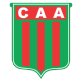

CLUB AGROPECUARIO ARGENTINO
Fundado el 23 de agosto de 2011
Sede Social: Alte. Brown 56 (6530), Carlos Casares Tel: 02395-452725
Estadio: "Ofelia Rosennzuaig" - Av. Carlos Arroyos 546 (6530) Carlos Casares
Email: gabriela@agropecuario.club
Presidente: Grobocopatel Bernardo
Vicepresidente: Venticinque María Gabriela
Secretario: Pettorossi María Eugenia
Prosecretario: Ruetti Ibáñez Nancy
Tesorero: Vilela Diego Alberto